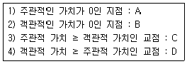
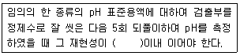
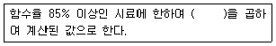
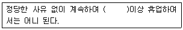

폐기물처리산업기사 (2018-09-15 기출문제)
1과목: 폐기물개론
1. 다음 중 산성이 가장 강한 수용액상 폐액은?
- pOH=11인 수용액상 폐액
- pOH=1인 수용액상 폐액
- pH=2인 수용액상 폐액
- pH=4인 수용액상 폐액
(정답률: 83%)

2. 다음 고-액 분리 장치가 아닌 것은?
- 관성분리기
- 원심분리기
- filter press
- belt press
(정답률: 61%)
3. 인구 1200만인 도시에서 년간 배출된 총 쓰레기량이 970만 톤이었다면 1인당 하루 배출량(kg/인ㆍ일)은? (단, 1년은 365일 임)
- 약 2.0
- 약 2.2
- 약 2.4
- 약 2.6
(정답률: 82%)
4. 인구 100000명이고 1인 1일 쓰레기 배출량은 1.4kg/인ㆍ일이라 한다. 쓰레기의 밀도가 650kg/m3라고 하면 적재량 12m3인 트럭 (1대 기준)으로 1일 동안 배출된 쓰레기 전량을 운반하기 위한 횟수(회)는?(오류 신고가 접수된 문제입니다. 반드시 정답과 해설을 확인하시기 바랍니다.)
- 150
- 160
- 170
- 180
(정답률: 80%)
5. 5m3의 용적을 갖는 쓰레기를 압축하였더니 3m3으로 감소되었을 때 압축비(CR)는?
- 0.43
- 0.06
- 1.67
- 2.50
(정답률: 89%)
6. 쓰레기 재활용 측면에서 가장 효과적인 수거 방법은?(오류 신고가 접수된 문제입니다. 반드시 정답과 해설을 확인하시기 바랍니다.)
- 대도시보다는 문화수준이 열악한 중소도시의 주민이 쓰레기를 더 많이 발생시킨다.
- 쓰레기 발생량은 주방쓰레기량에 영향을 많이 받으므로, 엥겔지수가 높은 서민층의 쓰레기가 부유층보다 많다.
- 쓰레기를 자주 수거해가면 쓰레기 발생량이 증가한다.
- 쓰레기통이 클수록 유효용적이 증가하여 발생량이 감소한다.
(정답률: 78%)
7. 쓰레기 3성분을 조사하기 위한 실험 결과가 다음과 같을 때 자연분의 함량(%)은? (단, 원시료 무계=5.40kg/ 건조 후 무게=3.67kg, 강열 후 무계=1.07kg)
- 약 20
- 약 32
- 약 48
- 약 68
(정답률: 55%)
8. 다음 조건에서 폐기물의 발생가능지점과 재활용가능시점을 순서대로 나열한 것은?

- A지점 이후, D지점 이후
- A지점 이후, C지점 이후
- B지점 이후, D지점 이후
- B지점 이후, C지점 이후
(정답률: 71%)
9. 산업폐기물의 종류와 처리방법을 서로 연결한 것 중 가장 부적절한 것은?
- 유해성 슬러지-고형화법
- 폐알칼리-중화법
- 폐유류-이온교환법
- 폐용제류-증류화수법
(정답률: 70%)
10. 사용한 자원 및 에너지, 환경으로 배출되는 환경오염물질을 규명하고 정량화함으로써 한 제품이나 공정에 관련된 환경부담을 평가하고 그 에너지와 자원, 환경부하 영향을 평가하여 환경을 개선시킬 수 있는 기회를 규명하는 과정으로 정의되는 것은?
- ESSA
- LCA
- EPA
- TRA
(정답률: 89%)
11. 적환장에 대한 설명 중 틀린 것은?
- 적환장은 폐기물 처분지가 멀리 위치할수록 필요성이 더 높다.
- 고밀도 거주지역이 존재할수록 적환장의 필요성이 더 높다.
- 공기를 이용한 관로수송시템 방식을 이용할수록 적환장의 필요성이 더 높다.
- 작은 용량의 수집차량을 사용할수록 적환장의 필요성이 더 높다.
(정답률: 86%)
12. 파쇄기에 관한 설명으로 옳지 않은 것은?
- 압축파쇄기로 금속, 고무, 연질플라스틱류의 파쇄는 어렵다.
- 충격파쇄기는 대개 왕복식을 사용하며 유리나 목질류 등을 파쇄하는데 이용된다.
- 전단파쇄기는 충격파쇄기에 비해 파쇄속도가 느리고 이물질의 혼입에 대하여 약하다.
- 압축파쇄기는 파쇄기의 마모가 적고 비용이 적게 소요되는 장점이 있다.
(정답률: 65%)
13. 발열량을 측정하는 방법 중에서 원소분석과 관련이 없는 것은?
- Dulong 식
- Bomb의 식
- Kunle의 식
- Gunz의 식
(정답률: 74%)
14. 도시 쓰레기의 조성이 탄소 48%, 수소 6.4%, 산소 37.6%, 질소 2.06%, 황 0.4% 그리고 회분 5%일 때 고위 발열량(kcal/kg)은? (단, Dulong 식을 적용할 것)
- 약 7500
- 약 6500
- 약 5500
- 약 4500
(정답률: 53%)
15. 쓰레기발생량 예측모댈 중 쓰레기 발생량에 영향을 주는 모든 인자를 시간에 대한
함수로 하여 각 영향 인자들간의 상관관계를 수식화 하는 방법은?
- 시간경향모델
- 다중회귀모델
- 동적모사모델
- 시간수지모델
(정답률: 81%)
16. 분쇄된 폐기물을 가벼운 것(유기물)과 무거운 것(무기물)으로 분리하기 위하여 탄도학을 이용하는 선별법은?
- 중액선별
- 스크린선별
- 부상선별
- 관성선별법
(정답률: 68%)
17. 폐기물 조성별 재활용 기술로 적절치 못한 것은?
- 부폐성 쓰레기-퇴비화
- 가연성 폐기물-열회수
- 난연성 쓰레기-열분해
- 연탄재-물질회수
(정답률: 70%)
18. 탄소 12kg을 연소시킬 때 필요한 산소량(kg)과 발생하는 이산화탄소량(kg)은?
- 8, 20
- 16, 28
- 32, 44
- 48, 60
(정답률: 72%)
19. 쓰레기의 겉보기 비중을 구하는 방법에 대한 설명 중 옳지 않은 것은?
- 30cm 높이에서 3회 낙하시킨다.
- 용적을 알고 있는 용기에 시료를 넣는다.
- 낙하시켜 감소된 양을 측정한다.
- 단위는 kg/m3 또는 ton/m3으로 한다.
(정답률: 70%)
20. 폐기물의 자원화 및 재생이용을 위한 선별 방법으로 체의 눈 크기, 폐기물의 부하특성, 기울기, 회전속도 등의 공정인자에 의해 영향받는 방법은?
- 부상선별
- 풍력선별
- 스크린선별
- 관성선별
(정답률: 84%)
2과목: 폐기물처리기술
21. 오염된 농경지의 정화를 위해 다른 장소로부터 비오염 토양을 운반하여 넣는 정화기술은?
- 객토
- 반전
- 희석
- 배토
(정답률: 90%)
22. 혐기성 소화와 호기성 소화를 비교한 내용으로 가장 거리가 먼 것은?(오류 신고가 접수된 문제입니다. 반드시 정답과 해설을 확인하시기 바랍니다.)
- 호기성 소화 시 상층액의 BOD 농도가 낮다.
- 호기성 소화 시 슬러지 발생량이 많다.
- 혐기성 소화 슬러지 탈수성이 불량하다.
- 혐기성 소화 운전이 어렵고 반응시간도 길다.
(정답률: 54%)
23. 탄소 85%, 수소 13%, 황 2%를 함유하는 중유 10kg 연소에 필요한 이론산소량(Sm3)은?
- 약 9.8
- 약 16.7
- 약 23.3
- 약 32.4
(정답률: 63%)
24. 인구 200000명인 도시에 매립지를 조성하고자 한다. 1인1일 쓰레기 발생량은 1.3kg이고 쓰레기 밀도는 0.5ton/m3이며 이 쓰레기를 압축하면 그 용적이 2/3로 줄어든다. 압축한 쓰레기를 매립한 경우, 년간 필요한 매립면적(m2)은? (단, 매립지 깊이=2m, 기타조건은 고려하지 않음)
- 약 12500
- 약 51800
- 약 63300
- 약 76200
(정답률: 66%)
25. 슬러지 등 유기물의 토지주입에 대한 설명으로 틀린 것은?
- 슬러지를 투지주입 시 주금속의 흡수량 감소를 위해 토양은 pH는 6.5 또는 그 이상이어야 한다.
- 용수슬러지에는 다량의 lime이 포함되어 있어 pH가 높고 토양의 산도를 중화시키는데 유용하다.
- 각종 중금속의 허용범위 내에서 주입시켜야 할 슬러지 양은 하수슬러지가 용수슬러지보다 작다.
- 토양의 산도를 중화시키기 위한 lime의 소요량은 토량 pH가 5.5이하일 때가 5.5이상일 때보다 많다.
(정답률: 63%)
26. 혐기성 분해 시 메탄균의 최적 pH는?
- 5.2~5.4
- 6.2~6.4
- 7.2~7.4
- 8.2~8.4
(정답률: 80%)
27. 1일 20톤 폐기물을 소각처리하기 위한 로의 용적(m3)은? (단, 저위발열량=700kcal/kg, 로내 열부하=20000kcal/m3ㆍhr, 1일 가동시간=14시간)
- 25
- 30
- 45
- 50
(정답률: 64%)
28. 1일 쓰레기 발생량이 29.8ton인 도시 쓰레기를 깊이 2.5m의 도랑식(trench)으로 매립하고자 한다. 쓰레기 밀도 500kg/m3, 도랑 점유율 60%. 부피 감소율 40%일 경우 5년간 필요한 부지면적(m2)은?
- 43500
- 56400
- 67300
- 78700
(정답률: 57%)
29. 도시 쓰레기를 퇴비화할 경우 적정 수분함량에 가장 가까운 것은?
- 15%
- 35%
- 55%
- 75%
(정답률: 64%)
30. 분뇨를 소화 처리함에 있어 소화 대상 분뇨량이 100m3/day이고, 분뇨 내 유기물 농도가 10000mg/L라면 가스 발생량(m3/day)은? (단, 유기물 소화에 따른 가스발생량은 500L/kg-유기물, 유기물전량 소화, 분뇨비중=1.0)
- 500
- 1000
- 1500
- 2000
(정답률: 73%)
31. 도시폐기물 유기성분 중 가장 생분해가 느린 성분은?
- 단백질
- 지방
- 셀룰로우스
- 리그닌
(정답률: 79%)
32. 밀도가 300kg/m3인 폐기물 중 비가연분이 무게비로 50%일 때 폐기물 10m3 중 가연분의 양(kg)은?
- 1500
- 2100
- 3000
- 3500
(정답률: 84%)
33. 매립 시 표면차수막(연직차수막과 비교)에 관한 설명으로 가장 거리가 먼 것은?
- 지하수 집배수시설이 필요하다.
- 경제성에 있어서 차수막 단위면적당 공사비는 고가이나 총공사비는 싸다.
- 보수 가능성면에 있어서는 매립 전에는 용이하나 매립 후에는 어렵다.
- 차수성 확인에 있어서는 시공시에는 확인되지만 매립 후에는 곤란하다.
(정답률: 83%)
34. 분뇨 100kL/day를 중온 소화하였다. 1일 동안 얻어지는 열량(kcal/day)은? (단, CH4 발열량은 6000kcal/m3으로 하며 발생 가스는 전량 메탄으로 가정하고 발생가스량은 분뇨투입량의 8배로 한다.)
- 2.8×106
- 3.4×107
- 4.8×106
- 5.2×107
(정답률: 77%)
35. 유동층 소각로의 총 물질의 특성에 대한 설명으로 잘못된 것은?
- 활성일 것
- 내마모성이 있을 것
- 비중이 작을 것
- 입도 분포가 균일할 것
(정답률: 62%)
36. 슬러지를 개량(conditioning)하는 주된 목적은?
- 농축 성질을 향상시킨다.
- 탈수 성질을 향상시킨다.
- 소화 성질을 향상시킨다.
- 구성성분 성질을 개선, 향상시킨다.
(정답률: 86%)
37. 위생매립(복토+침출수 처리)의 장단점으로 틀린 것은?
- 처분 대상 폐기물의 증가에 따른 추가인원 및 장비가 크다.
- 인구밀집지역에서는 경제적 수송거리 내에서 부지확보가 어렵다.
- 추가적인 처리과정이 요구되는 소각이나 퇴비화와는 달리 위생매립은 최종처분 방법이다.
- 거의 모든 종류의 폐기물 처분이 가능하다.
(정답률: 61%)
38. 불포화토양층 내에 산소를 공급함으로써 미생물의 분해를 통해 유기물질의 분해를 도모하는 토양정화방법은?
- 생물학적분해법(biodegradation)
- 생물주입배출법(biobention)
- 토양경작법(landfarming)
- 토양세정법(soil flushing)
(정답률: 74%)
39. 유해폐기물 고화처리 시 흔히 사용하는 지표인 혼합율(MR)은 고화제 첨가량과 폐기물 양의 중량비로 정의된다. 고화처리 전 폐기물의 밀도가 1.0g/cm3, 고화처리된 폐기물의 밀도가 1.3g/cm이라면 혼합율(MR)이 0.755일 때 고화 처리된 폐기물의 부피변화율(VCF)은?
- 1.95
- 1.56
- 1.35
- 1.15
(정답률: 63%)
40. 여타 매립구조에 비해 운전비가 높은 단점이 있으나 안정화가 가장빠른 매립구조는?
- 혐기성매립
- 호기성매립
- 준로기성매립
- 개량형 혐기성매립
(정답률: 66%)
3과목: 폐기물 공정시험 기준(방법)
41. 유리전극법에 의한 pH 측정 시 정밀도에 관한 내용으로 ()에 들어갈 내용으로 옳은 것은?

- ±0.01
- ±0.⑤
- ±0.1
- ±0.5
(정답률: 71%)
42. ‘곧은 섬유와 섬유 다발’ 형태가 아닌 석면의 종류는? (단. 편광현미경법 기준)
- 직섬석
- 청석면
- 갈석면
- 백석면
(정답률: 66%)
43. 염산(1+2)용액 100mL의 염산농도( % W/V)는? (단, 염산 비중=1.18)
- 약 11.8
- 약 33.33
- 약 39.33
- 약 66.67
(정답률: 49%)
44. 기체크로마토그래프용 검출기 중 불꽃이온화검출기(FID)에 알칼리 또는 알칼리토류 금속염의 튜브를 부착한 것으로 유기질소 화합물 및 유기인화합물을 선택적으로 검출할 수 있는 것은?
- 열전도도 검출기(Thermal Conductivity Detector, TCD)
- 전자포획 검출기(Electron Capture Detector, ECD)
- 불꽃광도 검출기(Flame photometric Detector, FPD)
- 불꽃열이온 검출기(Flame Thermionic Detector, FTD)
(정답률: 45%)
45. 시료의 채취방법으로 옳은 것은?
- 액상혼합물은 원칙적으로 최종지점의 낙하구에서 흐르는 도중에 채취한다.
- 콘크리트 고형화물의 경우 대형의 고형화물로 분쇄가 어려울 경우에는 임의의 10개소에서 채취하여 각각 파쇄하여 100g씩 균등량 혼합하여 채취한다.
- 유기인 시험을 위한 시료채취는 폴리에틸렌병을 사용한다.
- 시료의 양은 1회에 1kg이상 채취한다.
(정답률: 68%)
46. 이온전극법을 이용한 시안측정에 관한 성명으로 옳지 않은 것은?
- pH 4이하의 산성으로 조절한 후 시안 이온전극과 비교전극을 사용하여 전위를 측정한다.
- 시안화합물을 측정할 때 방해물질들은 증류하면 대부분 제거된다.
- 다량의 지방성분을 함유한 시료는 아세트산 또는 수산화나트륨용약으로 pH6~7로 조절한 후 시료의 약 2%에 해당하는 부피의 노말 핵산 또는 클로로폼을 넣어 추출하여 유기층은 버리고 수층을 분해하여 사용한다.
- 시료는 미리 세척한 유리 또는 폴리에틸렌 용기에 채취한다.
(정답률: 50%)
47. 고형물 함량이 50%, 강열감량이 80%인 폐기물의 유기물 함량(%)은?
- 30
- 40
- 50
- 60
(정답률: 51%)
48. 폐기물 중 기름성분을 중량법으로 특정할 때 정량한계는?
- 0.1% 이하
- 0.2% 이하
- 0.3% 이하
- 0.5% 이하
(정답률: 72%)
49. 원자흡수분광광도법 분석에 사용되는 연료 중 불꽃의 온도가 가장 높은 것은?
- 공기-프로판
- 공기-수소
- 공기-아세틸렌
- 일산화이질소-아세틸렌
(정답률: 63%)
50. 자외선/가시선 분광법으로 크롬을 측정할 때 시료중에 총 크롬을 6가크롬으로 산화시키는데 사용되는 시약은?
- 아황산나트륨
- 염화제일주석
- 티오황산나트륨
- 과망간산칼륨
(정답률: 81%)
51. 폐기물공정시험기준에서 유기물질을 함유한 시료의 전처리방법이 아닌 것은?
- 산화-환원에 의한 유기물 분해
- 회화에 의한 유기물 분해
- 질산-염산에 의한 유기물 분해
- 질산-황산에 의한 유기물 분해
(정답률: 56%)
52. 용액 100g 중의 성분 부피(mL)를 표시하는 것은?
- W/W%
- W/V%
- V/W%
- V/V%
(정답률: 70%)
53. 4℃의 물 0.55L는 몇 CC가 되는가?
- 5.5
- 55
- 550
- 5500
(정답률: 78%)
54. 용출시험 결과 산출 시 시료 중의 수분함량 보정에 관한 설명으로 ()에 알맞은 것은?

- 15+{100-시료의 함수율(%)}
- 15-{100-시료의 함수율(%)}
- 15×{100-시료의 함수율(%)}
- 15÷{100-시료의 함수율(%)}
(정답률: 75%)
55. 대상 폐기물의 양이 550톤이라면 시료의 최소수(개)는?
- 32
- 34
- 36
- 38
(정답률: 77%)
56. 함수율 90%인 하수오니의 폐기물 명칭은?
- 액상폐기물
- 반고상폐기물
- 고상폐기물
- 폐기물은 상(相, phase)을 구분하지 않음
(정답률: 70%)
57. 시료용액의 조제를 위한 용출조작 중 진탕회수와 진폭으로 옳은 것은? (단, 상온, 상압 기준)
- 분당 약 200회, 진폭 4~5cm
- 분당 약 200회, 진폭 5~6cm
- 분당 약 300회, 진폭 4~5cm
- 분당 약 300회, 진폭 5~6cm
(정답률: 69%)
58. 폐기물 공정시험기준(방법)의 총칙에 관한 내용 중 옳은 것은?
- 용액의 농도를 (1→10)으로 표시한 것은 고체성분 1mg을 용매에 녹여 전량을 10mL로 하는 것이다.
- 염산(1+2)라 함은 물 1mL와 염산 2mL를 혼합한 것이다.
- 감압 또는 진공이라 함은 따로 규정이 없는 한 15mmH2O이하를 말한다.
- ‘정밀히 단다’라 함은 규정된 양의 시료를 취하여 화학저울 또는 미량저울로 칭량함을 말한다.
(정답률: 74%)
59. 5톤 이상의 차량에 적재되어 있을 때에는 적재폐기물을 평면상에 몇 등분한 후 각 등분마다 시료를 채취해야 하는가?
- 3
- 6
- 9
- 12
(정답률: 71%)
60. 유도결합플라즈마-원자발광분광기(ICP)에 대한 설명으로 틀린 것은?
- ICP는 분석장치에서 에어로졸 상태로 분무된 시료는 가장 안쪽의 관을 통하여 도너츠 모양의 플라즈마의 중심부에 도달한다.
- 플라즈마의 온도는 최고 15,000K의 고온에 도달한다.
- ICP는 아르곤 가스를 플라즈마 가스로 사용하여 수정발전식 고주파발생기로부터 발샌된 주파수 27.13MHz영역에서 유도코일에 의하여 플라즈마를 발생시킨다.
- 플라즈마는 그 자체과 광원으로 이용되기 때문에 매우 좁은 농도범위의 시료를 측정하는 데 주로 활용된다.
(정답률: 58%)
4과목: 폐기물 관계 법규
61. 매립시설의 기술관리인 자격기준으로 틀린 것은?
- 수질환경기사
- 대기환경기사
- 토양환경기사
- 토목기사
(정답률: 58%)
62. 매립시설의 검사기관이 아닌 것은?
- 한국관리공단
- 한국건설기술연구원
- 한국산업기술시험원
- 한국농어촌공사
(정답률: 51%)
63. 폐기물처리시설 주변지역 영향조사 기준 중 조사지점에 관한 내용으로 틀린 것은?
- 미세먼지와 다이옥신 조사지점은 해당 시설에 인접한 주거지역 중 3개소 이상 지역의 일정한 곳으로 한다.
- 악취 조사지점은 해당시설에 인접한 주거지역 중 냄새가 심한 곳 3개소 이상의 일정한 곳으로 한다.
- 지표수 조사지점은 해당 시설에 인접하여 폐수, 침출수 등이 흘러들거나 흘러들 것으로 우려되는 지역의 상, 하류 각 1개소 이상의 일정한 곳으로 한다.
- 토양 조사지점은 매립시설에 인접하여 토양오염이 우려되는 4개소 이상의 일정한 곳으로 한다.
(정답률: 65%)
64. 폐기물처리업자, 폐기물처리시설을 설치, 운영하는 자 등은 환경부령이 정하는 바에 따라 장부를 갖추어 두고, 폐기물의 발생ㆍ배출ㆍ처리상황 등을 기록하여 최종 기재한 날부터 얼마 동안 보존하여야 하는가?
- 6개월
- 1년
- 3년
- 5년
(정답률: 80%)
65. 폐기물처리 신고자의 준수사항으로 ()에 옳은 것은?

- 1년
- 2년
- 3년
- 5년
(정답률: 80%)
66. 주변지역 영향조사 대상 폐기물 처리시설의 기준으로 알맞은 것은?
- 1일 재활용능력이 100톤 이상인 사업장 폐기물 소각열회수시설
- 매립면적 1만 제곱미터 이상의 사업장 지정 폐기물 매립 시설
- 매립면적 3만 제곱미터 이상의 사업장 지정 폐기물 매립 시설
- 매립면적 10만 제곱미터 이상의 사업장 일반 폐기물 매립 시설
(정답률: 63%)
67. 폐기물관리법상 벌칙기준 중 7년 이하의 징역이나 7천만원 이하의 벌금에 처하는 행위를 한 자는?
- 대행계약을 제경하지 아니하고 종량제 봉투를 제작ㆍ유통한 자
- 폐기물처리시설의 사후관리를 제대로 하지 않아 받은 시정명령을 이행하지 않은 자
- 지정된 장소 외에 사업장 폐기물을 매립하거나 소각한 자
- 거짓이나 그 밖의 부정한 방법으로 폐기물 처리업 허가를 받은 자
(정답률: 63%)
68. 폐기물관리법의 적용을 받지 않는 물질은?(오류 신고가 접수된 문제입니다. 반드시 정답과 해설을 확인하시기 바랍니다.)
- 원자력안전법에 따른 방사성 물질과 이로 인하여 오염된 물질
- 하수도법에 의한 하수ㆍ분뇨
- 가축분뇨의 관리 및 이용에 관한 법률에 따른 가축분뇨
- 용기에 들어있는 기체상태의 물질
(정답률: 66%)
69. 사후관리 대상인 폐기물을 매립하는 시설이 사용종료 또는 폐쇄 후 침출수의 누출 등으로 주민의 건강 또는 재산이나 주변환경에 심각한 위해를 가져올 우려가 있다고 인정하면 시설을 설치한 자가 예치하여야 할 비용은?
- 경제적부담원칙
- 폐기물처리비용
- 수수로
- 사후관리이행보증금
(정답률: 84%)
70. 지정폐기물의 종류를 설명한 것으로 적절하지 못한 것은?
- 액체상태의 폴리클로리네이티드비페닐 함유폐기물을 1리터당 2밀리그램 이상 함유한 것에 한한다.
- 액체상태 외의 폴리클로리네이티드비페닐 함유폐기물은 용출액 1리터당 0.3밀리그램 이상 함유한 것에 한한다.
- 폐석면은 석면의 제거 작업에 사용된 비닐시트, 방진 마스크, 작업복 등을 포함한다.
- 폐석면은 슬레이트 등 고형화된 석면 제품등의 연마ㆍ절탄ㆍ가공 시설의 집진기에서 모아진 분진을 포함한다.
(정답률: 52%)
71. 특별자치시장, 특별자치도지사, 시장, 군수, 구청장은 조례로 정하는 바에 따라 종량제 봉투 등의 제작, 유통, 판매를 대행하게 할 수 있다. 이를 위반하여 대행 계약을 체결하지 않고 종량제 봉투 등을 제작, 유통한 자에 대한 벌칙 기준은?
- 2년 이하의 징역이나 2천만원 이하의 벌금에 처한다.
- 3년 이하의 징역이나 3천만원 이하의 벌금에 처한다.
- 5년 이하의 징역이나 5천만원 이하의 벌금에 처한다.
- 6년 이하의 징역이나 7천만원 이하의 벌금에 처한다.
(정답률: 51%)
72. 시장ㆍ군수ㆍ구청장(지방자치단체인 구의 구청장)의 책무가 아닌 것은?
- 지정폐기물의 적정처리를 위한 조치 강구
- 폐기물처리시설 설치ㆍ운영
- 주민과 사업자의 청소 의식 함양
- 폐기물의 수집ㆍ운반ㆍ처리방법의 개선 및 관계인의 자질 향상
(정답률: 43%)
73. 위해의료폐기물 중 생물ㆍ화학폐기물이 아닌 것은?
- 폐백신
- 폐혈액제
- 폐항암제
- 폐화학치료제
(정답률: 64%)
74. 재활용에 해당되는 황동에는 폐기물로부터 에너지를 회수하거나 회수할 수 있는 상태로 만들거나 폐기물을 연료로 사용하는 환경부령으로 정하는 황동이 있다. 시멘트 소성로 및 환경부 장관이 정하여 고시하는 시설에서 연료로 허용하는 폐기물(지정 폐기물 제외)과 가장 거리가 먼 것은? (단, 그 밖에 환경부장관이 고시하는 폐기물 제외)
- 폐타이어
- 폐유
- 폐섬유
- 폐합성고무
(정답률: 57%)
75. 폐기물처리시설의 사후관리기준 및 방법 중 침출수 관리방법으로 매립시설의 차수시설 상부에 모여 있는 침출수의 수위는 시설의 안정 등을 고려하여 얼마로 유지되도록 관리하여야 하는가?
- 0.6 미터 이하
- 1.0 미터 이하
- 1.5 미터 이하
- 2.0 미터 이하
(정답률: 65%)
76. 폐기물처리시설(매립시설)의 사용을 끝내거나 폐쇄하려할 때 시ㆍ도지사나 지방환경관서의 장에게 제출하는 폐기물 매립시설 사후관리계획에서 포함되어야 하는 사항과 거리가 먼 것은?
- 빗물배제계획
- 지하수 수질조사 계획
- 구조물과 지반 등의 안정도 유지 계획
- 침출수 관리계획(관리형 매립시설은 제외한다.)
(정답률: 47%)
77. 관리형 매립시설 침출수의 BOD(mg/L) 배출 허용기준으로 옳은 것은? (단, 가 지역 기준)
- 50
- 70
- 90
- 110
(정답률: 71%)
78. 기술관리인을 두어야 할 폐기물처리시설은?
- 지정폐기물을 매립하는 면적이 3,000m2의 매립지
- 일반폐기물을 매립하는 용적이 10,000m3이상의 매립지
- 150kg/hr의 감염성 폐기물 소각로
- 5ton/day 이상인 퇴비화 시설
(정답률: 60%)
79. 폐기물처리 담당자 등에 대한 교육과 관련된 설명 중 틀린 것은?
- 교육기관의 장은 교육 과정 종로 후 5일 이내에 교육결과를 교육대상자에게 알려야 한다.
- 환경부장관은 교육계획을 매년 1월 31일까지 시ㆍ도지사나 지방환경관서의 장에게 알려야 한다.
- 교육기관의 장은 매 분기 교육실적을 그 분기가 끝난 후 15일 이내에 환경부장관에게 보고하여야 한다.
- 시ㆍ도지사나 지방환경관서의 장은 교육대상자를 선발하여 해당 교육과정이 시작되기 15일 전ᄁᆞ지 교육기관의 장에게 알려야 한다.
(정답률: 53%)
80. 폐기물관리법상 사업장일반폐기물의 종류별 처리기준 방법에 대하여 틀리게 연결된 것은?
- 소각제-매립, 안정화, 고형화처리
- 폐지류ㆍ폐목재류 및 폐섬유류-소각처리
- 분진-매립, 소각, 안정화
- 폐촉매ㆍ폐흡착제 및 폐흡수제-소각, 매립
(정답률: 57%)